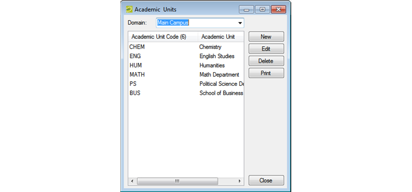
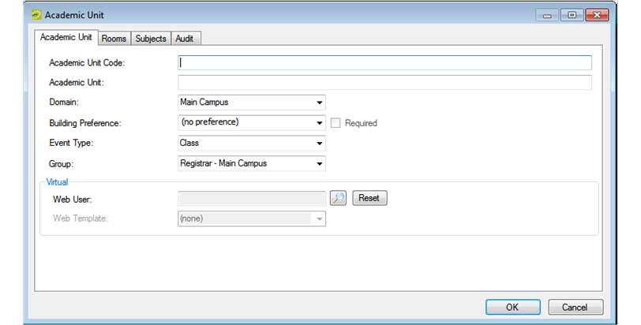

An academic unit is a level of organization within an institution that defines responsibility for making schedule requests for a portion of a domain. Academic units are used when assigning permissions to academic users and when filtering reports.
When you configure your academic units, you must specify the event type that is to be used when you publish your courses in
The term “domain” is controlled by an EMS system parameter (Campus: Academic Unit Title Singular and Campus: Academic Unit Title Plural), and typically, it is changed to Department or Division to better describe how course scheduling requests are divided. See Also: Editing System Parameters.


|
Option |
Description |
|---|---|
|
Academic Unit Code |
Required field. Abbreviated text that conveys the unit name or description. For example, if a unit is named Department of Life Science, then a code for the unit could be LIFESCI. The code can be a maximum of 10 characters, including spaces. |
|
Academic Unit |
Required field. The name of the unit. The name can be a maximum of 30 characters, including spaces. |
|
Domain |
The domain with which the units are associated. The value that is displayed here is the value that you selected in Step 2 but you can select a different value if needed. |
|
Building Preference |
You can leave the building preference set to the default value of (no preference), or you can select a specific building, area, or view. If you select a specific building, area, or view, then this specific building, area, or view is set to the default value for all courses that are held in this academic unit during Set Preferences mode, but a user can select a different value if needed. If you select Required, then the specific building, area, or view is the only value that is allowed for all courses that are held in this academic unit during Set Preference modes. |
|
Event Type |
The event type that is to be used for the room bookings when publishing your courses in EMS for the unit. You can also specify the event type at the course type level. The event type specified here is used if you choose not to associate course types with event types. See Configuring Course Types. |
|
Everyday User Everyday User Process Template |
Optionally, you can select a Everyday User for this academic unit and a default process template. After the term is published, this Everyday User will see the courses that are associated with this academic unit in the View My Requests section of To select a user, click the Search icon to open the Everyday Users dialog box and search from a list of registered Everyday Users.
The string is not case-sensitive, but your search is limited to the exact order of characters in the string and it must begin with the information for which you are searching. For example, if searching by Email Address, a search string of bob returns bob.worth@emssoftware.com but not dbobbett@emssoftware.com. To return these fields to their default values at any time, click Reset. |
All rooms that meet your search criteria are displayed in the Available list.